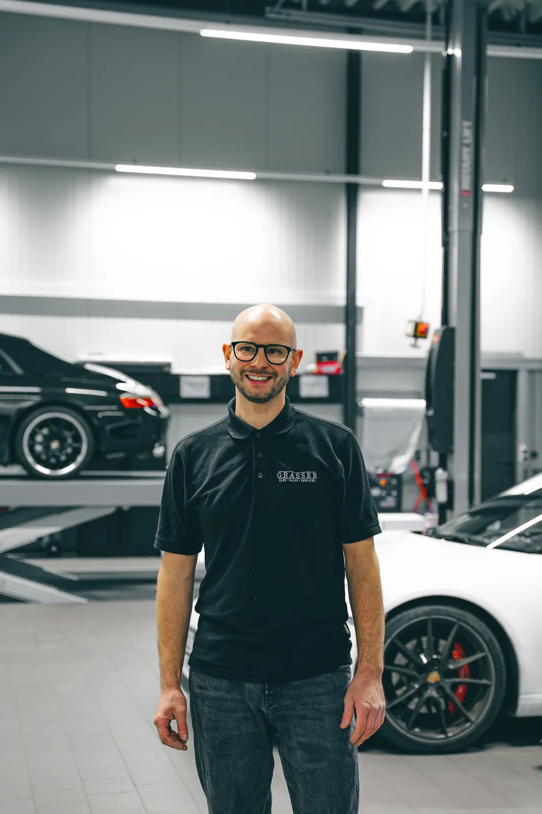
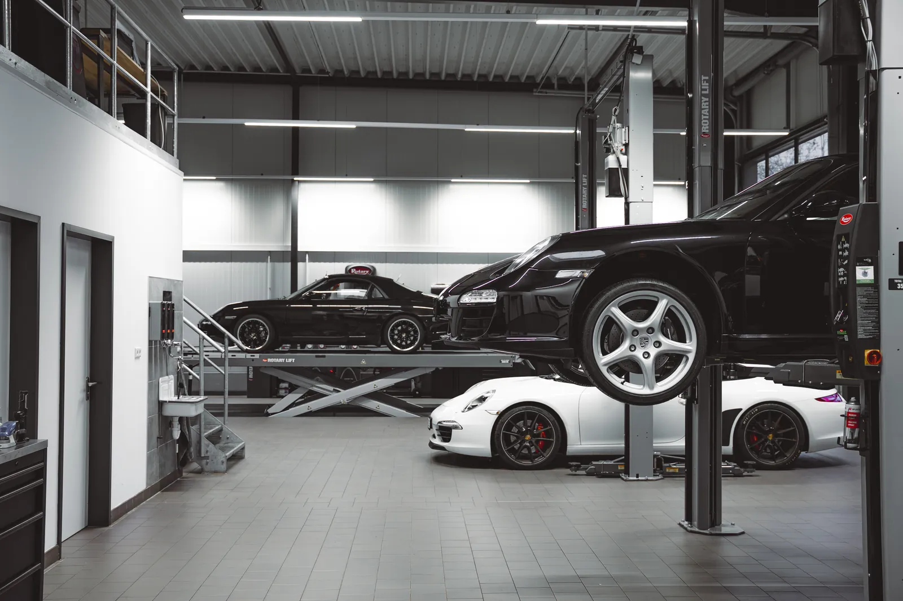

Kleine Wartung
ab 499 €
Im Intervall zwischen den großen Wartungen, nach Herstellervorgabe für Ihre Baureihe. Inklusive Flüssigkeiten, Ersatzteile und Wartungsliste.
Wartung, Reparatur und Fahrwerksabstimmung für Ihren Porsche — im vorgeschriebenen Umfang, mit Wartungsliste des Herstellers und Eintrag ins digitale Serviceheft.

Nein — wenn die Wartung nach Herstellervorgaben ausgeführt und lückenlos dokumentiert wird. Das ist der Kern unserer Arbeit, nicht eine Formulierung.
Das europäische Wettbewerbsrecht erlaubt es Herstellern nicht, die Garantie an Wartungen in der eigenen Vertragswerkstatt zu knüpfen. Entscheidend ist, wie gewartet wird: im vorgeschriebenen Umfang, zu den vorgeschriebenen Intervallen, mit Originalteilen oder Teilen gleicher Qualität, und nachweisbar.
Anders kann es bei freiwilligen Anschluss- und Gebrauchtwagengarantien aussehen. Deren Bedingungen legt der jeweilige Garantiegeber fest. Bringen Sie die Unterlagen mit — wir sehen vor dem Termin gemeinsam nach, was für Ihr Fahrzeug gilt, und sagen Ihnen offen, wenn der Weg ins Zentrum in Ihrem Fall der bessere ist.
Wir arbeiten die Wartungsliste des Herstellers für Ihre Baureihe ab. Sie bekommen sie ausgehändigt.
Jede Wartung wird eingetragen, dort, wo sie auch das Porsche Zentrum und jeder spätere Käufer sieht.
Original oder qualitativ gleichwertig. Auf Wunsch mit Beleg.
Rechnung mit allen Positionen und Teilenummern, damit die Historie lückenlos bleibt.
Flüssigkeiten und Ersatzteile sind im Preis enthalten — keine Stundenrechnung, die erst am Ende feststeht. Zusätzliche Arbeiten, die laut Plan fällig sind, bieten wir an. Ausgeführt wird erst nach Ihrer Freigabe.
ab 499 €
Im Intervall zwischen den großen Wartungen, nach Herstellervorgabe für Ihre Baureihe. Inklusive Flüssigkeiten, Ersatzteile und Wartungsliste.
ab 699 €
Der volle Umfang laut Wartungsplan, ebenfalls inklusive Flüssigkeiten und Ersatzteile. Eintrag ins digitale Serviceheft.
Bremsflüssigkeit, Zündkerzen, Getriebeöl oder PDK-Service hängen bei Porsche an Zeit und Laufleistung. Wir sehen vorab nach, was bei Ihrem Fahrzeug ansteht, und nennen den Preis, bevor der Wagen auf die Bühne geht.
Startpreise, abhängig von Baureihe, Motor und Fälligkeit. Den genauen Preis für Ihr Fahrzeug erhalten Sie vor dem Termin.

Rund 80 Prozent der Fahrzeuge in unserer Werkstatt sind Porsche. Das heißt: Wir kennen die Schwachstellen der einzelnen Generationen nicht aus dem Handbuch, sondern von der Bühne — und wissen, wo man bei einem 996 genauer hinsieht als bei einem 992.
Für luftgekühlte Modelle und ältere Baureihen bis zur Restauration gibt es einen eigenen Bereich: Old- und Youngtimer.
Was über die Wartung hinausgeht, beginnt bei uns immer gleich: erst die Durchsicht, dann ein Angebot. Keine Arbeit, die Sie nicht freigegeben haben.

Ölservice am Doppelkupplungsgetriebe nach Herstellerintervall, dazu Diagnose, wenn das Getriebe ruppig schaltet oder Fehler meldet.
Kupplung, Druckplatte und Ausrücklager für die Handschalter der Baureihen 996, 997 und 991 — auf Wunsch zusammen mit dem Zweimassenschwungrad, wenn es ohnehin offen liegt.
Einbau und Abstimmung von Sportfahrwerken, etwa von Bilstein und KW. Mit der Radlastwaage wird jedes Rad einzeln gewogen und die Lastverteilung eingestellt.
Fehlersuche an Motor, Elektrik und Elektronik, Verschleißreparaturen an Bremse, Fahrwerk und Abgasanlage. Wir sagen Ihnen, was jetzt sein muss und was noch eine Saison hält.
Nach Scheibentausch, Fahrwerksarbeiten oder einem Frontschaden müssen Kamera und Radar neu eingemessen werden. Das machen wir auch für Porsche — sonst ein Grund, doch ins Zentrum zu fahren.
Straßen- und Rennstreckenreifen, Wechsel mit Sichtprüfung von Bremse und Fahrwerk. Zentralverschlussfelgen mit dem vorgeschriebenen Drehmoment und Werkzeug.
Sie sind im Urlaub oder auf Geschäftsreise? Wir holen Ihren Porsche ab und bringen ihn gewartet zurück.
Wenn Sie in der Zwischenzeit mobil bleiben müssen, steht ein Wagen bereit.
Sie haben einen Porsche im Blick? Wir sehen ihn uns vor dem Kauf mit Ihnen an.
Nein. Die Herstellergarantie bleibt erhalten, wenn die Wartung nach Herstellervorgaben ausgeführt und dokumentiert wird — auch in einer freien Meisterwerkstatt. Bei freiwilligen Anschluss- oder Gebrauchtwagengarantien gelten die Bedingungen des Garantiegebers. Die prüfen wir gern vorab mit Ihnen.
Bei uns beginnt die kleine Wartung bei 499 €, die große bei 699 € — jeweils inklusive Flüssigkeiten und Ersatzteile. Der genaue Preis hängt von Baureihe, Motor und den fälligen Zusatzarbeiten ab. Sie erhalten ihn vor dem Termin.
Das gibt Porsche je nach Baureihe und Baujahr nach Zeit und Laufleistung vor — je nachdem, was zuerst eintritt. Das Intervall steht im Serviceheft. Nennen Sie uns Modell, Baujahr und Kilometerstand, dann sagen wir Ihnen, welche Wartung ansteht.
Ja, ins digitale Serviceheft. Damit ist sie für jede spätere Werkstatt, auch für das Porsche Zentrum, und für einen späteren Käufer nachvollziehbar.
Nein, der 911 hat eine Steuerkette. Ein regelmäßiger Wechsel wie beim Zahnriemen entfällt, die Kette und ihre Spanner sehen wir bei der Wartung trotzdem an.
Dann sehen wir nach, welche Wartung ansteht, und nennen Ihnen den Preis vorab. Auf Wunsch holen wir Ihren Porsche ab und bringen ihn zurück.
Grasser Cars · Sales · ServicesFreie Porsche Werkstatt in Bayern, für Kundinnen und Kunden aus Nürnberg, Fürth, Zirndorf, Oberasbach, Cadolzburg, Stein, Schwabach und Ansbach.